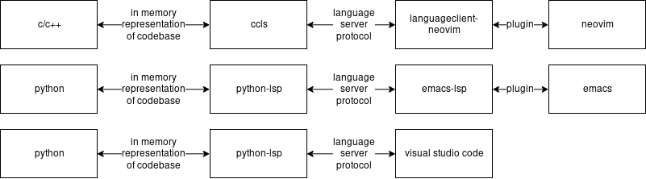
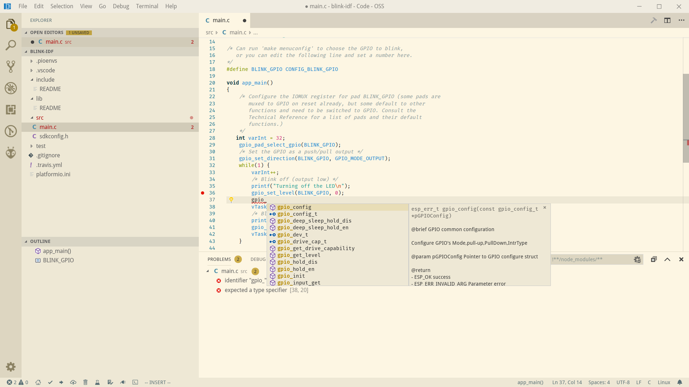
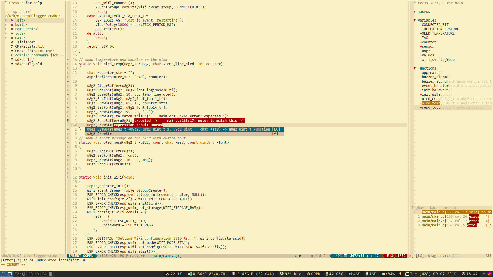
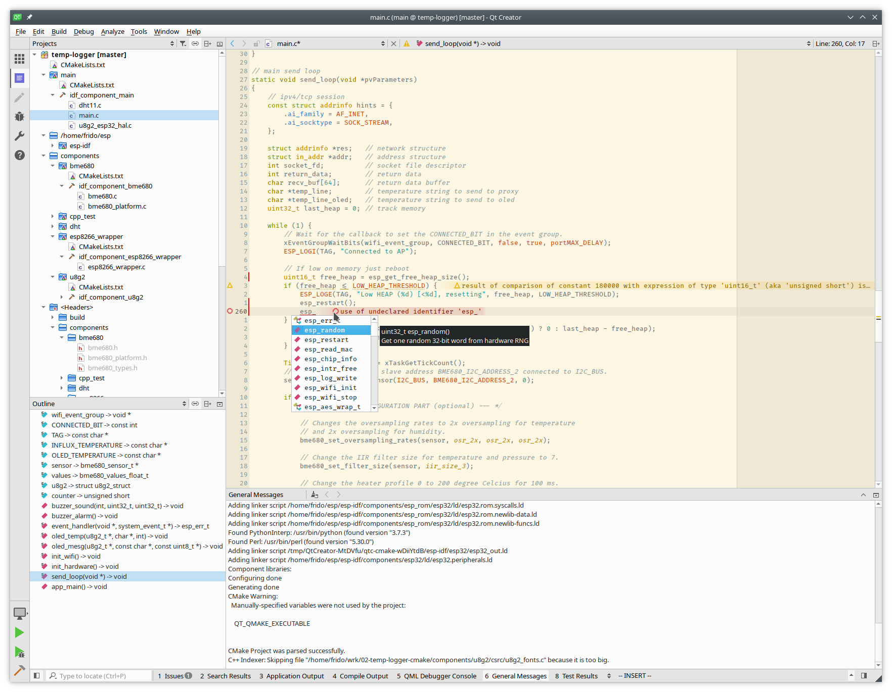
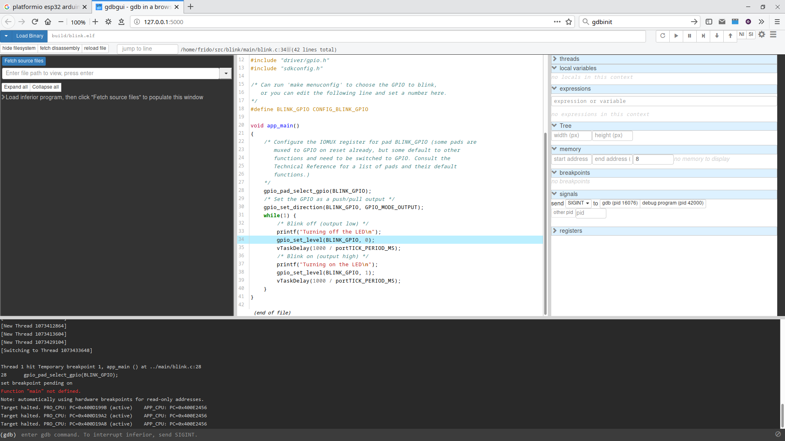

IDE options for ESP-IDF
If you want to develop on ESP32 boards with ESP-IDF there are now several applications you can use as an IDE or editor. In late 2018 I tried several of these options and here are the results so far. Surprisingly Visual Studio Code is overrepresented in this list, I was not aware of this editor up to now but arguably it is quite good.
Language Server Protocol
VSCode also introduced some new nomenclature in the editor world, notably the Language Server Protocol. This decouples all the programming language specifics from the editor, so an editor only has to implement this protocol to gain access to all to features like tab completion, real time errors etc. It does not need to know anything about the programming language, that is handled by the servers, and they are provided by the community around that particular language. For example Neovim implements LSP as a plugin (there are alternatives), it can then talk to a C/C++ client (also multiple alternatives) for example ccls that deals with scanning the entire code base, keeping that in memory, and providing all the hooks that Neovim needs to implement the extra features. For Python an entirely different client can be used python-language-server, but the protocol stays the same. Since all programming and scripting languages seem to be supporting this, most editors are now also jumping on the bandwagon. As of late 2018 I noticed that a lot of editors where still lagging behind VSCode, understandable as VSCode introduced this protocol and it’s implementation has a head start and is built into the editor. It will be interesting to see if other editors will pick up the in the future.

For now the editors I tested where:
Eclipse
This is the supported solution as of now, personally I don’t like eclipse much since it’s a bit too heavy for my taste. If you’re working on ESP32 professionally you’d probably pick this.
Visual Studio

- Platformio with visual studio code: platformio is pretty wild, it supports a whole lot of development boards, development frameworks like arduino, mbed and even libraries out of the box. It does this magic by providing some python glue logic to any developer environment of choice, in this case visual studio code. The downside of this approach is that Platformio is sometimes slow on catching up to the latest ESP-IDF release. Also Platformio changes the placement of all the build files. Things like “make menuconfig” are not really supported. Much of the framework you’re using is hidden in platformio logic. Paid support is available which gives you access to the (hardware) debugger. Update Q2-2019: hardware debugger is now free thanks to a sponsorship from Western Digital and SiFive, will be merged into 4.0 link tutorial
- Visual Studio Code + C/CPP extension: This extension is the Microsoft way of integrating C/C++ into it’s editor (it sits at the same level as CCLS the language server picture above) you’ll have to configure all the include paths yourself but there is a good tutorial that works really well. Especially with bear make.
- Visual Studio Code + CMake + CQuery: As we can use CMake in ESP-IDF and there’s an extension for it in VSCode I’d thought I’d use this combination. Remember, CQuery is for the code model and CMake is for the build system. I could not get this combination to work, from the quick inspection that I did there might be a “race condition” between the two when opening a project.
Overall Visual Studio Code can be made to work, but I noticed that when I added more and more plug-ins (vim and git for example) everything started to get quite slow. So I have not pursued it further. If you want to go this route, check out Platformio first since it’s now a one stop shop for embedded programming.
Vim

For NeoVim/Vim to work as an IDE you really need language protocol support. That support is getting there but it’s still a moving target. If you’re not careful you can sink a lot of time in keeping everything updated and checking all the different plugins and language servers. For the time being if you’re doing anything C/C++ like just use old style vim with ctags. The screenshot above took quite an amount of work to figure it out and involves almost 20 plugins.
Emacs
Maybe I should try it sometime.
QtCreator

QtCreator has been my development environment of choice for my Linux C/C++ work, since it has proper VI mode, in-line C/C++ warnings/errors, tab completion and is pretty fast. It also can use CMake natively.
QMake
Initially to get things up and running I copied the way how PlatformIO did it’s integration with QT Creator. I came up with a standard template that can be used with QMake. It relies on some hard-coded paths so it’s not exactly future proof. You can find it on github. This has since been used by developer https://github.com/allenck for a GUI tool to create both the .pro and .pro.user files.
CMake
Fortunately CMake build support will be integrated in the 4.x branch of ESP-IDF and it’s available as a preview now in the 3.x branch. With QtCreator 4.8 everything is working quite well now. Just open a project with the CMakeLists.txt provided, all examples should have them included now. You do not have to use a custom xtensa kit, just use whatever you have with your QT/compiler installation. Next cmake will be configured, it should report “CMake project was parsed successfully”. If everything worked you should see something like:
Important: if you only choose the xtensa kit, everything from warnings to tab completions will fail
Building
Because there is CMake support you could build your application in Qt Creator as well, however I found that it’s easier just to use an external terminal since this gives you direct support for “idf.py menuconfig” as well. Remember that you can flash your board without leaving monitor mode, just use ctrl+t followed by ctrl+f inside “idf.py monitor”
Debugging
A few months ago I bought a hardware debugger so I could use the JTAG feature for ESP32 boards. It’s an FT232H minimodule. Unfortunately I could not get the QT Creator debugger to work. My guess is that the python API it uses to talk to the debugger it too ‘chatty’ for the xtensa gdb version ESP-IDF is using. After some research I’ve found the best option is to use gdbgui, a very lightweight wrapper around gdb that provides a nice web interface. To use it follow the documentation on openocd-esp32. Make sure you have a gdbinit file in your project directory containing:
target remote :3333
set remote hardware-watchpoint-limit 2
mon reset halt
flushregs
thb app_main
c
then run the following commands:
~/esp/openocd-esp32/bin/openocd -s share/openocd/scripts -f interface/ftdi/minimodule.cfg -f board/esp-wroom-32.cfg
gdbgui -g xtensa-esp32-elf-gdb --gdb-args "-x gdbinit" build/blink.elf
That’s about it, you’ll now get something like this in your browser.

Conclusion
So, after a lengthy excursion in both Visual Studio Code and Neovim I finally settled on Qt Creator, with CMake it now supports ESP-IDF out of the box. The debugger not working is not much of a downside since gdbgui is a really nice alternative. PlatformIO came in as a close second, but I had the feeling it “hid” a lot of the features of ESP-IDF inside it’s python glue layer. I’ve also had some minor problems with tab completion, intellisense indexing and other minor problems that sometimes randomly popped up. This, and the fact that after installing my favorite plugins (git, cmake, vim) things just became slow. Slow for me means that the CPU fan on my recent thinkpad is spinning up or that scrolling large amounts of text is just not smooth enough. In regards to vim, which is my default editor for small files I’ll be quite interested to see what the plugin landscape will look like in a year or so. For now I’m quite happy with QT Creator. There are some more neat vi integration tricks you can do with it, and I’ll share them in the future.